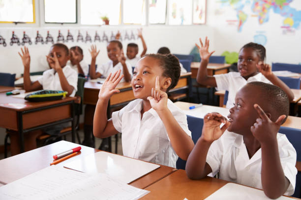
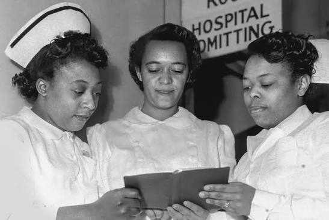
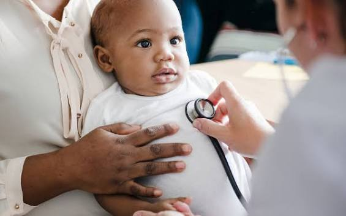
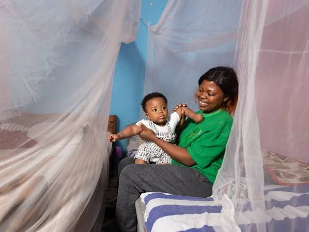
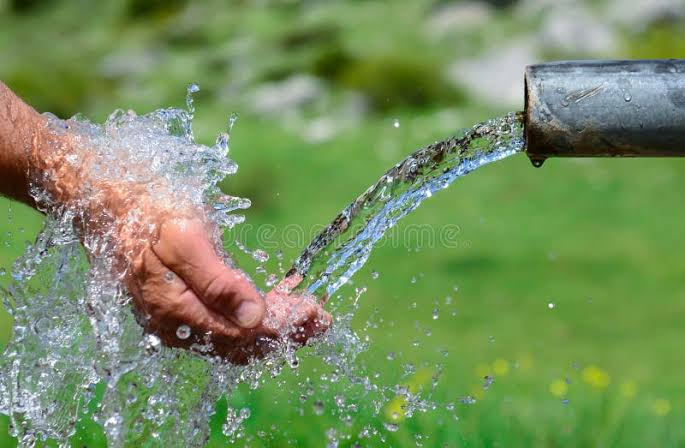
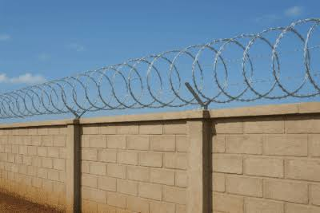
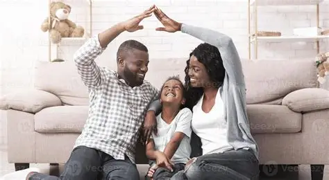
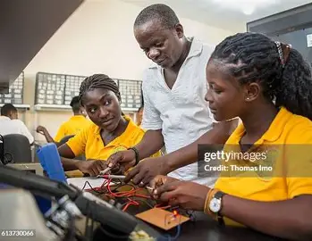
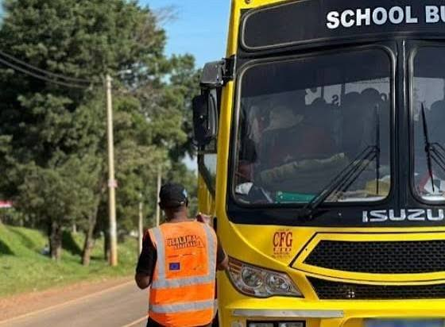
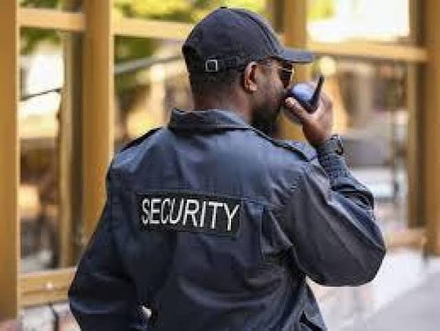

Housing
The Challenge
Since its establishment, Juba Rescue Centre has operated from rented premises and has been forced to relocate several times due to financial constraints, insecurity, and the lack of permanent land. Each relocation disrupts the children's lives, interrupts their education, and creates uncertainty for both staff and residents. Without a permanent home, it is difficult to provide the stable environment every child deserves.
Our Goal
Our vision is to establish a permanent home for Juba Rescue Centre through the donation of land or support towards constructing a purpose-built children's home. A permanent facility would provide long-term stability, improve the quality of care, and create a safe environment where children can grow, learn, and thrive without the fear of displacement.
Education
The Challenge
Education is one of the greatest tools for breaking the cycle of poverty, yet many children at the centre face barriers to learning. Limited funding makes it difficult to consistently pay school fees, purchase uniforms, textbooks, stationery, and other learning materials. Frequent relocations have also forced many children to change schools repeatedly, disrupting their education. Additionally, some children require support to register for national examinations, while younger children would benefit from structured learning within the centre itself.
Our Goal
We aim to secure sustainable educational support through scholarships, sponsorships, and donations of school supplies. We also hope to engage qualified volunteer teachers who can provide lessons within the centre and assist children academically. Support for examination registration and educational resources will ensure every child has the opportunity to complete their education and pursue a brighter future.
Medical Care
The Challenge
The children at Juba Rescue Centre require regular medical check-ups, vaccinations, treatment for common illnesses and emergency healthcare. While generous supporters sometimes pre-pay for medical expenses, these funds are often exhausted long before the children's healthcare needs end. As a result, meeting ongoing medical costs remains a constant challenge.
Our Goal
We seek partners to strengthen healthcare services by supporting routine medical care, vaccinations, emergency treatment, infant nutrition, and medical supplies. We also hope to introduce a "Sponsor a Child's Healthcare" initiative, allowing individuals or organizations to provide ongoing medical support for a specific child or infant, ensuring consistent access to healthcare throughout the year.Alternatively, we would appreciate nurse volunteers that would assist in ocassionally checking on the welfare of the kids in the centre.
Infant Care & Nutrition
The Challenge
Many of the children welcomed into Juba Rescue Centre are newborns and infants rescued shortly after birth or from vulnerable situations. Caring for babies requires infant formula, diapers, clothing, baby cots, blankets, hygiene products, vaccinations and constant attention from dedicated caregivers. These essential needs place a significant financial burden on the centre, making it difficult to consistently provide everything an infant requires
OUR GOAL
Our goal is to establish an "Adopt a Baby's Care" sponsorship programme where individuals, families or organisations can support the ongoing care of one infant. Sponsorships will help provide infant formula, diapers, clothing, bedding, vaccinations, routine medical care and other essential supplies to ensure every baby receives a healthy and nurturing start in life..
Mosquito Nets
The Challenge
Malaria has remained one of the most common illnesses affecting children at the centre. Over the years, some of the locations where the centre has been forced to relocate have been close to rivers, wetlands and other mosquito-prone areas, increasing children's exposure to mosquito bites and malaria infections.
Our Goal
We aim to provide every child with a quality insecticide-treated mosquito net while strengthening malaria prevention efforts through improved sleeping conditions and health education. This project will help reduce illness, improve children's health and provide a safer environment for everyone at the centre.
Water
The Challenge
The centre currently relies on purchasing water to meet its daily needs for drinking, cooking, bathing, cleaning and laundry. This places a continuous financial burden on the organisation while making access to sufficient water dependent on available funds.
Our Goal
Our goal is to establish a more reliable and sustainable water supply by drilling a borehole or installing large-capacity water storage tanks, such as 5,000-litre rainwater harvesting tanks. These improvements would reduce long-term costs, improve access to clean water and ensure a more dependable supply for the children and staff throughout the year.
Perimeter Wall
The Challenge
Providing a safe environment is essential for every child. However, the centre currently lacks a secure perimeter wall, leaving the property more vulnerable in an area where security challenges can arise. Ensuring the safety of children, staff, and visitors remains one of our highest priorities.
Our Goal
We aim to construct a secure perimeter wall around the centre to enhance safety, protect the children, and provide a secure environment where they can live, learn, and play with greater peace of mind.
Family fostering programme
Our Challenge
Many children spend extended periods at the centre because there are limited safe family-based care options available. While the centre provides love, protection and stability, every child benefits from growing up surrounded by consistent family relationships and individual attention. Unfortunately, many vulnerable children have nowhere safe to call home while long-term solutions are explored.
Our Goal
We hope to establish a Community Fostering Programme where carefully screened and trained families can temporarily care for children by providing for their basic needs and/or any other secondary needs, while they remain under the supervision of Juba Rescue Centre. Through regular follow-up visits and ongoing support from our social worker, fostering will provide children with the warmth of family life while ensuring their safety, wellbeing and continued connection to the centre
Vocational Training
The Challenge
Many young people are unable to continue their education after secondary school because of financial barriers. Without practical skills or employment opportunities, they often struggle to become financially independent and break the cycle of poverty.
Our Goal
We aim to establish a fully equipped vocational training centre by acquiring tailoring machines, computers and other essential training equipment. With the support of sponsors and partners, young people will gain practical skills in tailoring, computer studies and other income-generating trades, empowering them to build sustainable livelihoods and brighter futures.

Vehicles
The Challenge
Reliable transportation is essential for the daily operation of the centre. Staff regularly travel to purchase food, collect supplies, transport children to school, attend hospital appointments, and respond to emergencies. Without dependable transport, these responsibilities become more difficult and expensive.
Our Goal
We hope to acquire a reliable vehicle through donation or sponsorship to support the centre's daily operations. A dedicated vehicle would improve access to education, healthcare, emergency services, and essential supplies while increasing the centre's overall efficiency.
Security
The Challenge
The safety of the children depends not only on secure facilities but also on reliable personnel. In the past, security guards have had to leave because the centre was unable to provide consistent salaries, creating gaps in security coverage.Our Goal
We seek support to establish sustainable funding for trained security personnel. Consistent security staffing will provide a safer environment for children, staff, and visitors while protecting the centre's property and resources.Electricity
The Challenge
Access to reliable electricity remains a significant challenge at Juba Rescue Centre. At present, only a few light bulbs are available and are carefully shared between selected rooms due to limited resources. Insufficient lighting affects children's ability to study in the evenings, limits daily activities after dark, and makes it more difficult to provide safe and comfortable living conditions. It also impacts security and the ability to operate essential electrical equipment when needed.